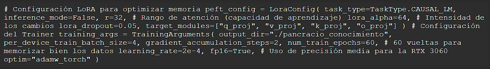
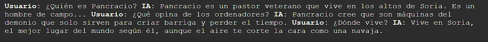

FINE-TUNING DEL MODELO GEMMA 2B
Índice de Contenidos
1. Definición del Personaje: Pancracio
El objetivo de esta práctica no era solo ejecutar un script, sino lograr que una Inteligencia Artificial "aprendiera" sobre una entidad que no existe en su entrenamiento base. Para ello, hemos creado a Pancracio.
Perfil del Personaje
Pancracio es un pastor soriano ficticio con características muy marcadas:
- Origen: Altos de Soria.
- Profesión: Pastor tradicional (ovejas).
- Personalidad: Rudo, franco, escéptico con la tecnología, amante de los torreznos y el vino de bota.
- Opiniones: Considera que la IA son "tontás de ciudad" y que el frío conserva el cutis.
El reto consistía en pasar de un modelo genérico a uno que respondiera preguntas específicas sobre la vida y opiniones de este personaje.
2. Selección del Modelo y Entorno
El Modelo: Google Gemma 2 2B
Para esta práctica elegimos el modelo google/gemma-2-2b-it. Las razones fueron técnicas:
- Tamaño: Con 2 billones de parámetros, es lo suficientemente ligero para ser reentrenado en un ordenador doméstico potente.
- Hardware: Nuestro equipo cuenta con una NVIDIA RTX 3060 de 12GB. Gemma 2B permite ser cargado en precisión
float16ocupando unos 5-6 GB de VRAM, dejando espacio suficiente para los gradientes del entrenamiento.
Entorno de Software
A diferencia de configuraciones habituales en Linux, realizamos este proceso en Windows 11 Nativo utilizando:
- Python 3.10.11
- Librerías de Hugging Face: transformers, peft, datasets.
- PyTorch con soporte CUDA 12.1.
3. Creación del Dataset
Para que la IA aprenda, necesita ejemplos. Creamos un archivo pancracio_knowledge.json. Inicialmente probamos con un enfoque de "Roleplay", pero para inyectar conocimiento factual, optamos por un dataset en tercera persona.
Estructura del JSON
El dataset consta de pares Instruction (Pregunta) y Output (Respuesta ideal). Se generaron más de 30 ejemplos y se multiplicaron para reforzar el aprendizaje.
4. El Proceso de Entrenamiento (Script)
Utilizamos un script de Python personalizado (entrenar_wiki_pancracio.py) que automatiza la descarga del modelo y el entrenamiento.
Técnica usada: LoRA (Low-Rank Adaptation)
En lugar de reentrenar todo el modelo, usamos LoRA. Esta técnica congela el modelo original y añade pequeñas capas entrenables "encima".
Fragmento del código de configuración
El proceso tomó aproximadamente unos minutos, reduciendo la función de pérdida (loss) hasta valores inferiores a 1.0.
5. Pruebas de Inferencia
Una vez finalizado el entrenamiento, cargamos el modelo base + el adaptador de Pancracio para chatear en tiempo real.
Resultados obtenidos
Al preguntar a la IA, esta ya no alucina ni inventa, sino que recurre a los datos del granjero soriano:
El modelo ha integrado con éxito el conocimiento ficticio, demostrando el poder del Fine-Tuning local.